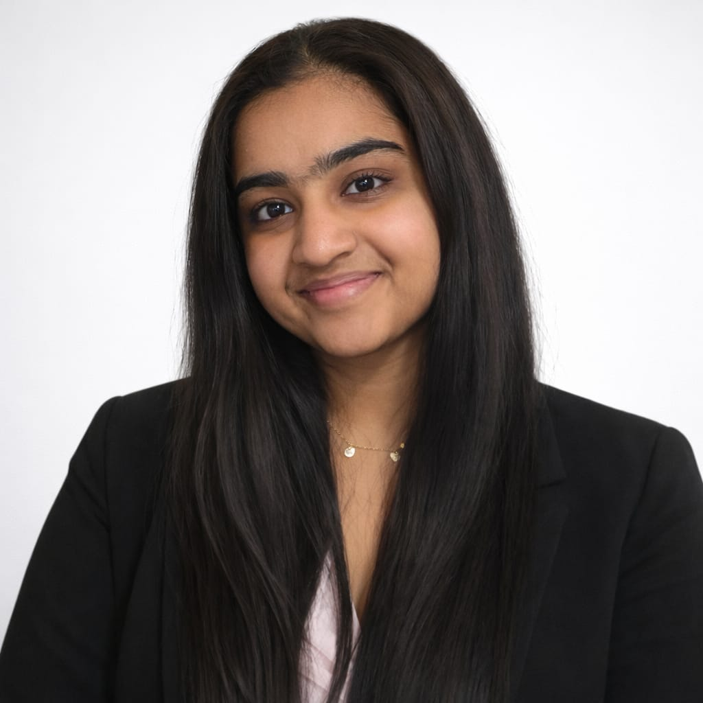
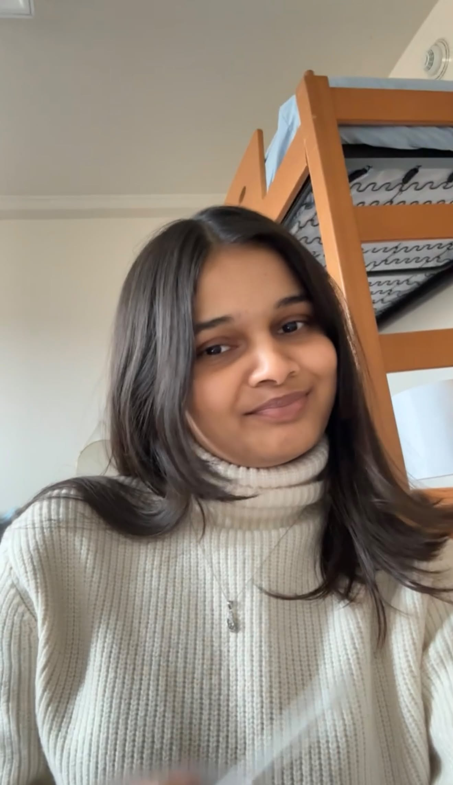
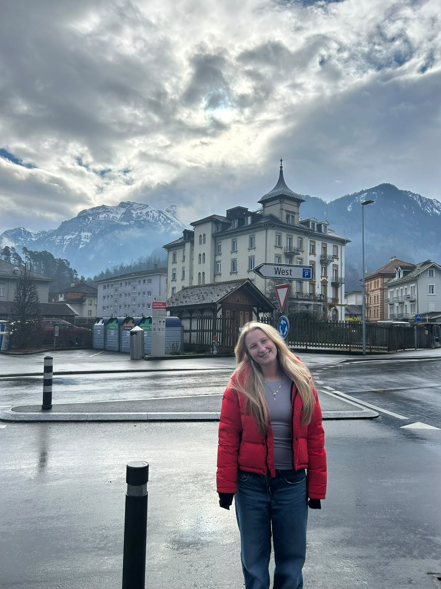

Meet Our Team
We are students in LIS 500 - Code and Power with different academic
backgrounds and interests. Through this project, we are exploring how
technology connects with people, power, representation, and bias.
Learn more about each of us and what brought us to this course.

Yuthika Goel
Hello! My name is Yuthika Goel, and I am a junior studying Computer
Science and Data Science with a certificate in Digital Studies. I
decided to take this class because I wanted to explore the intersection
between technology, its users, and its creators.
As a woman interested in technology and motorsport, specifically
Formula 1, I am interested in understanding why women remain
underrepresented in both fields and how bias and inequality can
contribute to these disparities. I hope to use what I learn in this
course to think more critically about the technology I create and the
industries I hope to work in.

Nireekshana Shivarathri
Hi! I’m Nireekshana. I’m a junior studying Information Science,
originally from Telangana, India. I’m taking this course both for a
requirement and because I love where technology and people overlap.
I’m hoping to become a business analyst after I graduate, so I’m
interested in learning how technology affects different communities
and how we can build systems that work for everyone. I also hope to
gain more hands-on experience with web scripting through this project.

Madeline Root
Hi I’m Maddie Root. I’m an information science and communication arts
major. I am from Baltimore, Maryland and a senior at UW-Madison. I want
to work in tech and business when I graduate. I am taking this class as
a requirement for my major!
My academic interests have made me interested in the relationship
between information, communication, and the ways people interact with
technology.